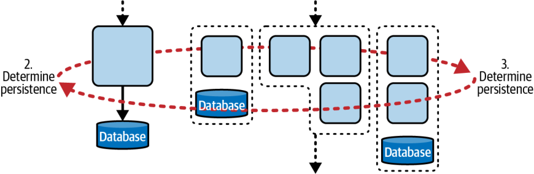
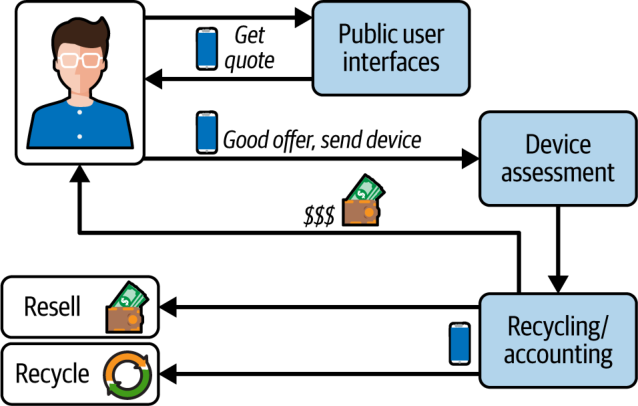
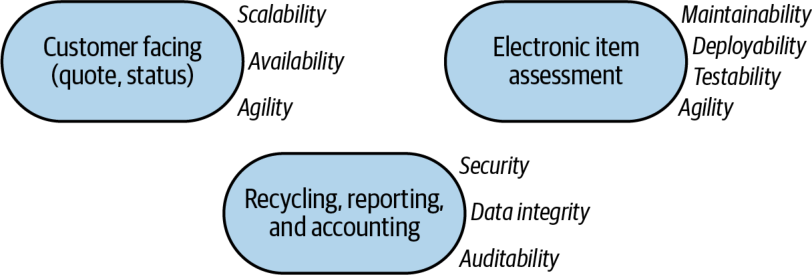

اثرِ دامنهگذاری (Scoping)
معماران میتوانند از دامنهٔ ویژگیهای معماری برای تعیینِ مرزهای مناسبِ سرویسها کمک بگیرند. تصویرِ کلیِ این فرایند در درختِ تصمیمِ (decision tree) شکل ۷-۱ آمده و در گامهای بعدی با جزئیاتِ بیشتر شرح داده میشود.

دامنهگذاری و سبکِ معماری
تعیینِ مرزهای کوانتومیِ حوزهٔ مسئله به انتخابِ سبکِ معماری کمک میکند: آیا معماری تکپارچه مناسبتر است یا معماری توزیعشده؟ بخشِ نخستِ نمودارِ تصمیمِ نشاندادهشده در شکل ۷-۲ را در نظر بگیرید.

همانگونه که در فصل ۴ گفتیم، معماران باید ویژگیهای معماری و حوزه را تحلیل کنند تا مناسبترین سبکِ معماری را تعیین کنند. بخشی از این تحلیل به این پرسش مربوط است که آیا راهحل به چند گروه ویژگی معماری نیاز دارد یا نه. در گامِ نخستِ شکل ۷-۲، معمار تعیین میکند که آیا سیستم میتواند با یک مجموعهٔ واحد از ویژگیهای معماری موفق شود یا به بیش از یک گروه نیاز است (برای یک نمونه، بخشِ «کاتا: Going Green» در صفحهٔ ۱۰۳ را ببینید).
اگر معمار به این نتیجه برسد که یک مجموعهٔ واحد از ویژگیهای معماری کافی است، میتواند معماری تکپارچه را برگزیند و از شمارِ انتخابهای بعدی بکاهد. اگر معماری توزیعشده را برگزیند، گامِ بعدی تعیینِ مرزهای کوانتومیِ آن است؛ چنانکه در شکل ۷-۳ نشان داده شده است.

در فصل ۱۸ رهنمودهایی برای تعیینِ دانهبندی ارائه میکنیم. گامِ بعدی انتخابِ سازوکارِ ماندگاری (persistence mechanism) است که به هر دو خانوادهٔ معماری مربوط میشود و در شکل ۷-۴ نشان داده شده است.

برای معماریهای تکپارچه، یک پایگاهدادهٔ تکپارچهٔ واحد عموماً مناسب است. معماری و پایگاهداده همگام و پابهپای هم توسعه و استقرار مییابند. فرایند در همینجا کامل میشود و معمار میتواند به انتخابِ مناسبترین سبکِ تکپارچه بپردازد.
در مقابل، معماریهای توزیعشده میتوانند از یک پایگاهدادهٔ واحد استفاده کنند (که در معماریهای رویدادمحور رایج است) یا دادهها را در امتدادِ مرزهای دانهبندیِ سرویسها افراز کنند (مانندِ معماریهای میکروسرویسها). یک گامِ دیگر باقی میماند: تعیینِ اینکه میانِ کوانتومها از چه نوع ارتباطی، همگام یا ناهمگام، استفاده شود. (این پرسش را در فصل ۱۵ بهتفصیل بررسی میکنیم.) به یاد داشته باشید که در برخی سیستمها، انتخابِ ارتباطِ همگام میتواند مرزهای کوانتومیای را که کوپلینگ ایستا تعیین کرده است تغییر دهد؛ این دو نوع کوپلینگ پیوسته بر یکدیگر اثر میگذارند.
کاتا: Going Green
بیایید با بهکارگیریِ کوانتوم معماری بهعنوانِ دامنهٔ ویژگیهای معماری، مسئلهای را تحلیل کنیم. این مسئله، با نامِ Going Green، در شکل ۷-۵ نشان داده شده است.
شما با Going Green (GG) کار میکنید؛ کسبوکاری که لوازمِ الکترونیکیِ کهنه، مانند تلفنهای همراه، را بازیافت میکند و دوباره میفروشد. سیستمِ آن هم از کیوسکهای (kiosks) عمومی و هم از یک وبسایت استفاده میکند که همگی سیستمِ واحدی را اجرا میکنند. کاربر میتواند شمارهٔ مدل و وضعیتِ دستگاهش را بارگذاری کند و GG برای آن قیمت پیشنهاد میدهد. اگر کاربر پیشنهاد را بپذیرد، میتواند دستگاه را در کیوسک تحویل دهد؛ یا اگر از راهِ وبسایت اقدام کند، GG جعبهای برایش میفرستد تا دستگاه را با پست ارسال کند. GG پس از دریافتِ دستگاه، آن را ارزیابی میکند و مبلغ را به کاربر میپردازد. سپس ارزشِ دستگاه را برآورد میکند و آن را یا بازیافت میکند یا دوباره میفروشد. سیستمِ GG افزون بر این، گزارشها و دیگر تحلیلها را نیز تولید میکند.

هنگامِ انجامِ تحلیلِ ویژگیهای معماری، متوجه میشوید که سه خوشهٔ متمایز شکل میگیرد؛ چنانکه در شکل ۷-۶ نشان داده شده است.

بخشهای روبهعمومِ (public-facing) برنامه به مقیاسپذیری، در دسترسبودن و چابکی نیاز دارند؛ کارکردهای پشتیبانیِ اداری (back-office) به امنیت، یکپارچگی داده و ممیزیپذیری نیاز دارند؛ و بخشِ ارزیابی به قابلیت نگهداری، استقرارپذیری و آزمونپذیری نیاز دارد (که روی هم ویژگی معماری مرکبِ چابکی را میسازند). چرا بخشِ ارزیابی به مجموعهٔ جداگانهای از ویژگیهای معماری نیاز دارد؟ این نمونهٔ خوبی است از اینکه محرکهای کسبوکار چگونه با دغدغههای معماری تلاقی میکنند. مدلِ کسبوکارِ GG بر فروشِ دوبارهٔ پرارزشترین لوازمِ الکترونیکیِ دستدوم تکیه دارد و مدلهای جدید پیوسته به بازار میآیند. هرچه GG بتواند ارزیابیهای دستگاههایش را سریعتر بهروز کند، دستگاههای جدیدتر (و در نتیجه باارزشتری) برای فروشِ دوباره به دست میآورد.
آیا میتوانید سیستمی طراحی کنید که همهٔ این ملاکها را برآورده کند: مقیاسپذیری، در دسترسبودن، امنیت، یکپارچگی داده، ممیزیپذیری، قابلیت نگهداری، استقرارپذیری و آزمونپذیری؟ ممکن است… اما دشوار خواهد بود. این ویژگیهای معماری اغلب اثرِ یکدیگر را خنثی میکنند: برای نمونه، دستیابی به استقرارپذیریِ سریع وقتی همزمان دغدغههای پشتیبانیِ اداری مانندِ ممیزیپذیری را در اولویت گذاشتهاید دشوارتر است. رابط کاربری نیز به سطحی از مقیاسپذیری نیاز دارد که با دیگر بخشهای سیستم تفاوتِ چشمگیری دارد.
بهجای آنکه بکوشید همهچیز را با هم به دست آورید، میتوانید خوشههای ویژگیهای معماری را راهنمای جداسازیِ کوانتومها قرار دهید. در شکل ۷-۷، خطچینها هر کوانتوم معماری را نشان میدهند. بهکارگیریِ دامنهٔ ویژگیها بهعنوانِ راهنمای دانهبندیِ سرویسها گامِ نخستِ خوبی در تعیینِ سودمندترین مجموعهٔ مصالحههاست. (این موضوع را در فصل ۱۸ بیشتر بررسی میکنیم.)